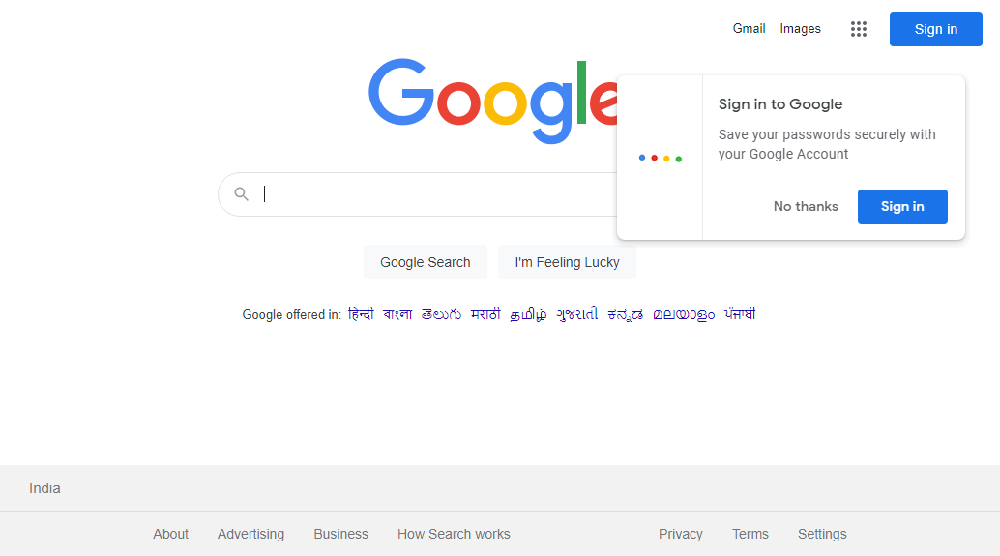

-
new
2:16:41 am / 00:00:22:850 Fail
new
05.19.2022 2:16:41 am 05.19.2022 2:17:04 am 00:00:22:850 · #test-id=1FailThis is first scenarioGiven Precondition is givenstepDefinitions.Hooks.AddScreenshot(io.cucumber.java.Scenario)imageWhen Something is doneStep skippedThen Something is expectedStep skippedPassThis is second scenarioGiven Another precondition is givenWhen Something is done againThen Something is expected againFailThis is first scenarioGiven Precondition is givenstepDefinitions.Hooks.AddScreenshot(io.cucumber.java.Scenario)imageWhen Something is doneStep skippedThen Something is expectedStep skipped -
newFeature
2:16:41 am / 00:00:22:704 Fail
newFeature
05.19.2022 2:16:41 am 05.19.2022 2:17:04 am 00:00:22:704 · #test-id=3FailThis is first scenarioGiven Precondition is givenstepDefinitions.Hooks.AddScreenshot(io.cucumber.java.Scenario)imageWhen Something is doneStep skippedThen Something is expectedStep skippedPassThis is second scenarioGiven Another precondition is givenWhen Something is done againThen Something is expected againFailThis is first scenarioGiven Precondition is givenstepDefinitions.Hooks.AddScreenshot(io.cucumber.java.Scenario)imageWhen Something is doneStep skippedThen Something is expectedStep skipped
-
org.openqa.selenium.NoSuchElementException
4 tests
org.openqa.selenium.NoSuchElementException
4 failedStatus Timestamp TestName Fail 02:16:52 am Given Precondition is given newFeature.This is first scenario.Given Precondition is givenFail 02:16:52 am Given Precondition is given new.This is first scenario.Given Precondition is givenFail 02:17:03 am Given Precondition is given newFeature.This is first scenario.Given Precondition is givenFail 02:17:04 am Given Precondition is given new.This is first scenario.Given Precondition is given
-
@2
1 tests
@2
1 passedStatus Timestamp TestName Pass 02:16:41 am This is second scenario new.This is second scenario -
@3
2 tests
@3
2 failedStatus Timestamp TestName Fail 02:16:41 am This is first scenario newFeature.This is first scenarioFail 02:16:58 am This is first scenario newFeature.This is first scenario -
@4
1 tests
@4
1 passedStatus Timestamp TestName Pass 02:16:41 am This is second scenario newFeature.This is second scenario -
@1
2 tests
@1
2 failedStatus Timestamp TestName Fail 02:16:41 am This is first scenario new.This is first scenarioFail 02:16:58 am This is first scenario new.This is first scenario
Started
May 19, 2022 02:16:41 am
Ended
May 19, 2022 02:17:04 am
Features Passed
0
Features Failed
2
Features
Scenarios
Steps
Timeline
Tags
| Name | Passed | Failed | Skipped | Others | Passed % |
|---|---|---|---|---|---|
| @2 | 1 | 0 | 0 | 0 | 100% |
| @3 | 0 | 2 | 0 | 0 | 0% |
| @4 | 1 | 0 | 0 | 0 | 100% |
| @1 | 0 | 2 | 0 | 0 | 0% |